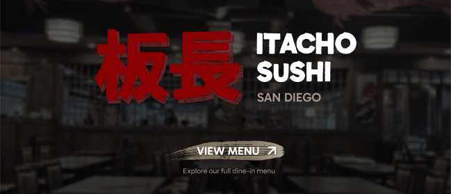
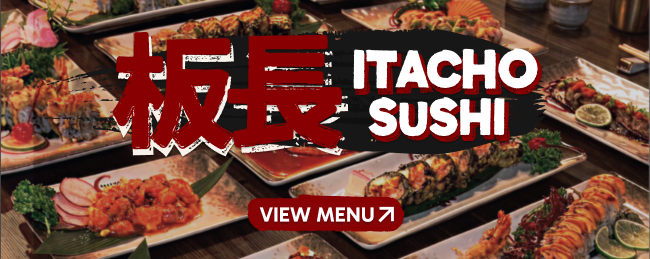
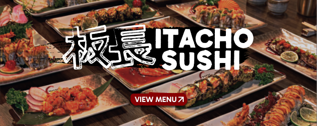
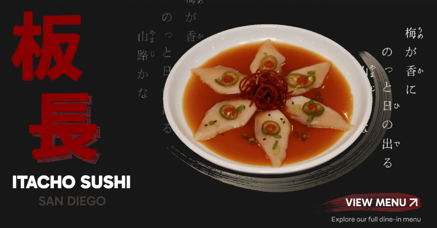

OVERVIEW
Itacho Sushi Overhaul
As part of a three-person design team, I partnered with Itacho Sushi to overhaul their digital web experience for both their desktop and mobile website. The restaurant's extensive all-you-can-eat (AYCE) menu and unclear information architecture made it difficult for customers to understand pricing, compare menu tiers, and quickly find dishes that fit their preferences.
Our goal wasn't to just redesign the interface, but to restructure how information was presented in a way that better helps customers understand pricing, explore dishes, and make confident dining decisions while preserving Itacho Sushi's identity.
PROBLEM STATEMENT
A Better Way to Explore the Menu
The experience of browsing Itacho Sushi's website was negatively impacted by a complicated menu structure and unclear information architecture. Customers struggled to distinguish between lunch and dinner offerings, understand three pricing tiers, and locate dishes that fit their dietary preferences. Rather than supporting quick decision-making, the website increased cognitive load and slowed the discovery experience.
OUR APPROACH
Design Strategy & Objectives
From the beginning, we recognized that Itacho Sushi's biggest challenge was not a lack of information, but how that information was presented. With an extensive lunch and dinner menu spanning three pricing tiers, our goal was to make the experience easier to navigate without overwhelming customers.
Guided by usability principles such as Hick's Law and Jakob's Law, we focused on simplifying the menu structure and organizing information in ways users already understood. Instead of adding more interactions, we prioritized clear hierarchy and better scanability, with the intent of helping customers quickly compare options, explore dishes, and make confident decisions.
RESEARCH GOALS
Validating the Experience
Because the original website lacked a clear structure, we first focused on validating our design decisions through an iterative mid-fidelity prototype before moving into visual design. We wanted to understand whether the new information hierarchy and layout helped users naturally navigate choices and find information with less effort.
We evaluated the prototype based on four key user goals:
- 1. Quickly understanding Itacho's AYCE structure and pricing options
- 2. Easily navigating between lunch, dinner, and different menu tiers
- 3. Finding specific dishes based on dietary preferences or restrictions
- 4. Locating essential restaurant details, including hours and address information
VALIDATION & ITERATION
Key Insights & Fixes
1. Connecting Pricing Tiers With Menu Options
Participants understood that Itacho offered multiple AYCE pricing tiers but struggled to connect them to the menu. Many expected the pricing cards to be clickable, while others were confused that both Platinum and Ultra linked to the same menu. As a result, users couldn't confidently compare tiers or understand what each included.
2. First Impressions
Our initial usability testing revealed that the landing page wasn't encouraging users to explore the website. The carousel of interior photos felt generic, lacked a strong connection to Itacho Sushi's identity, and gave users little reason to continue scrolling.

FINAL DESIGN
Final Interface Design
Through early testing, we identified and resolved key usability issues, strengthened content hierarchy, and established clearer connections between information. This foundation allowed our high-fidelity design decisions to be guided by validated user behaviors, ensuring the final experience was not only visually cohesive but also intuitive and functional.
REFLECTION
Working with Itacho Sushi helped me to understand that meaningful design is not created by having every answer, but by being willing to explore, question, and adapt throughout the process. Rather than something to avoid, uncertainty became an essential part of our design process. It pushed us to challenge our assumptions, consider new perspectives, and iterate our ideas until we created an experience that better aligned with both our client's vision and their users' needs.
The hours my team spent exploring different directions, discussing our decisions, and revisiting our designs allowed us to develop our initial concepts into a more thoughtful and intentional experience. Through each iteration, we gained a better understanding of the problem we were solving and learned that strong design comes from being open to change rather than trying to find the perfect answer too early.
Moving forward, I understand that my role as a designer is to approach each challenge with empathy, curiosity, and patience. By embracing uncertainty as part of the discovery process, I can continue creating solutions that better serve the people I design for.
INTERACTIVE PROTOTYPE
FOR THE CURIOUS
Design Explorations
A collection of directions we explored throughout the design process, experimenting with visual identity, composition, and menu organization before arriving at the final experience.
1. Hero Banner & Visual Identity Directions
Early visual iterations exploring different balances between dynamic photography, traditional Japanese calligraphy, bold typography, and varied button accents.




2. Menu Header & Tiers
We experimented with different approaches to tier selection, category navigation, and pricing hierarchy to find a layout that was clearer and easier to navigate than our earlier iterations.